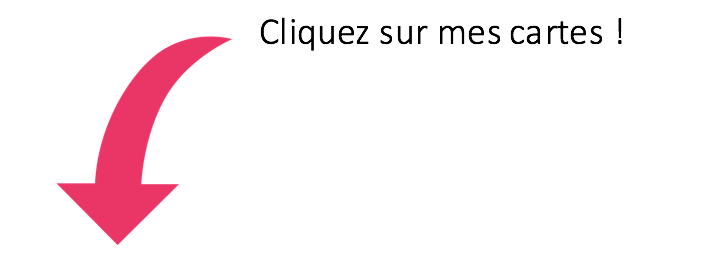

brice hortefeux
Groupe au Parlement européen : Parti Populaire Européen
Parti National : Les Républicains
Date de mandature : juillet 2014 - mai 2019
Taux de présence aux séances de vote : 97,5%*
Code couleur
Vote qui protège l'océan
Vote qui détruit l'océan 
Absence et Abstention 

règlement mesures techniques de la pêche
Le Règlement "mesures techniques" comprend une série de règles ayant pour but la conservation des ressources halieutiques et la protection des écosystèmes marins. Ce texte fixe par exemple certaines règles relatives aux engins de pêche (maillage des filets etc.), précise les zones et saisons de pêche, et établit des mesures visant à minimiser les impacts de la pêche sur les écosystèmes marins.
INTERDICTION DE LA PÊCHE ÉLECTRIQUE (1)
DATE : 16/04/2019
TEXTE : Règlement mesures techniques de la pêche
Texte entier :
Trois éléments clés concernant la pêche électrique :
> Interdiction de la pêche électrique à partir de juillet 2021
> Possibilité pour les États d’interdire la pêche électrique dans leurs eaux territoriales
> Jusqu’en 2021, les Pays-Bas ne peuvent avoir que 5% de leur flotte équipée avec des chaluts électriques (donc entre 7 et 14 navires au lieu de 84 actuellement)
Pour en savoir plus cliquez ici.
INTERDICTION DE LA PÊCHE ÉLECTRIQUE (2)
DATE : 16/01/2018
TEXTE : Règlement mesures techniques de la pêche
Amendement 303 :
Cet amendement interdit la pêche électrique en supprimant un régime de dérogation créé en 2006.
Un vote PROTECTEUR est un vote qui ADOPTE cet amendement.
Pour en savoir plus sur la pêche électrique lisez notre plaidoyer.
UNE DÉFINITION CRÉANT L'INCERTITUDE
DATE : 16/01/2018
TEXTE : Règlement mesures techniques de la pêche

Amendement 83 :
Cet amendement modifie la définition des filets dérivants : les filets semi-dérivants (auxquels une ancre est fixée) ne sont plus soumis aux restrictions s'appliquant aux filets dérivants.
Un vote PROTECTEUR est un vote qui REJETTE cet amendement.
Pour en savoir plus : Amendement 83.
DES OBJECTIFS QUANTIFIÉS
DATE : 16/01/2018
TEXTE : Règlement mesures techniques de la pêche

Amendement 299 :
Cet amendement maintient l'exigence d'avoir des objectifs quantifiables, ce qui facilite leur mise en œuvre effective et permet une plus grande transparence.
Un vote PROTECTEUR est un vote qui ADOPTE cet amendement.
Pour en savoir plus : Amendement 299.
RÉDUCTION DES PRISES ACCESSOIRES DE JUVÉNILES
DATE : 16/01/2018
TEXTE : Règlement mesures techniques de la pêche
Amendement 295 :
Cet amendement, en introduisant un objectif clair de réduction de 50% du volume total des prises accessoires de poissons juvéniles sur une période de 5 ans, maintient l'exigence d'avoir des objectifs quantifiables. Il donne une sécurité juridique au règlement.
Un vote PROTECTEUR est un vote qui ADOPTE cet amendement.
Pour en savoir plus : Amendement 295.
INTERDICTION DES FILETS DÉRIVANTS
DATE : 16/01/2018
TEXTE : Règlement mesures techniques de la pêche
Amendement 320 :
Cet amendement ré-autorise les filets dérivants en mer Baltique sans preuve scientifique à l'appui. Or, cette méthode, qui présente un fort impact, a été interdite pour préserver les écosystèmes marins.
Un vote PROTECTEUR est un vote qui REJETTE cet amendement.
Pour en savoir plus : Amendement 320.
le futur fonds européen à la pêche
Le Fonds européen pour les affaires maritimes et la pêche (FEAMP) détermine l'allocation de plus de 6 milliards d'euros de subventions publiques aux secteurs de la pêche et de l'aquaculture ainsi qu'à la protection du milieu marin pour la période 2021-2027.
DÉFINITION DE LA PETITE PÊCHE
DATE : 04/04/2019
TEXTE : Fonds européen pour la pêche (2021-2027)
Amendement 80 :
Cet amendement autorise les Etats membres à redéfinir unilatéralement la petite pêche dans les régions ultra-périphériques (Outre-mer). Avec des définitions à géométrie variable, l’UE crée une concurrence déloyale entre artisans et industriels, ces derniers pouvant bénéficier des aides destinées aux premiers.
Un vote PROTECTEUR est un vote qui REJETTE cet amendement.
Pour en savoir plus : Amendement 80.
AIDE À LA CONSTRUCTION (1)
DATE : 04/04/2019
TEXTE : Fonds européen pour la pêche (2021-2027)
Amendement 137 :
Cet amendement - en supprimant l’alinéa imposant un critère d’ancienneté (entre 5 et 30 ans) pour bénéficier d’une aide financière - autorise les aides à la construction. Or, ces subventions sont néfastes car elles entraînent une surcapacité des navires et une surexploitation des ressources (pour en savoir plus.).
Un vote PROTECTEUR est un vote qui REJETTE cet amendement.
Pour en savoir plus : Amendement 137.
AIDE À LA CONSTRUCTION (2)
DATE : 04/04/2019
TEXTE : Fonds européen pour la pêche (2021-2027)
Amendement 138 :
Cet amendement autorise, par un moyen détourné, l‘attribution d’aides à tout navire, quelle que soit sa longueur. Or, ces subventions sont néfastes car elles sont responsables de la surcapacité des navires et de la surexploitation des ressources ( pour en savoir plus.).
Un vote PROTECTEUR est un vote qui REJETTE cet amendement.
Pour en savoir plus : Amendement 138.
AIDE AUX JEUNES PÊCHEURS
DATE : 04/04/2019
TEXTE : Fonds européen pour la pêche (2021-2027)
Amendement 135 :
Cet amendement supprime le critère d’âge associé à la notion de « jeune pêcheur ». Jusqu’à présent, ce statut permettait d’aider financièrement les pêcheurs de moins de 40 ans à s’installer. La suppression de ce plafond constitue une incitation supplémentaire, alors que l’UE n’a toujours pas réglé le problème de la surcapacité.
Un vote PROTECTEUR est un vote qui REJETTE cet amendement.
Pour en savoir plus : Amendement 135.
ACCROISSEMENT DE L'EFFORT DE PÊCHE
DATE : 04/04/2019
TEXTE : Fonds européen pour la pêche (2021-2027)
Amendement 312 :
Cet amendement réintroduit des subventions dommageables pour la construction de bateaux, une pratique encourageant la surcapacité et la surpêche et contraire aux engagement internationaux de l’Union européenne ( l'Objectif de développement durable 14.6.).
Un vote PROTECTEUR est un vote qui REJETTE cet amendement.
Pour en savoir plus : Amendement 312.
TRANSPARENCE
DATE : 04/04/2019
TEXTE : Fonds européen pour la pêche (2021-2027)
Amendement 302 :
Cet amendement prévoit la publication régulière, sur internet, d’informations complètes sur l’allocation des subventions européennes pour la pêche.
Un vote PROTECTEUR est un vote qui ADOPTE cet amendement.
Pour en savoir plus : Amendement 302.
accords commerciaux avec des pays tiers
Accord de pêche : ils ont vocation à faciliter l'accès des flottes industrielles européennes aux eaux de pays "partenaires", notamment en Afrique. Largement subventionnés et accusés d'exporter la surpêche européenne vers les pays en développement, ces accords sont l'objet de nombreuses critiques.
Accord de libre-échange entre l'UE et le Japon (JEFTA) : cet accord avait pour objectif de créer une zone de libre-échange englobant 635 millions d'habitants et représentant près d'un tiers du PIB mondial. Cet accord, d’une grande importance économique pour le Japon et l'Union européenne, le JEFTA aurait pu être l’occasion pour l’UE de demander certaines garanties environnementales.
ACCORD DE PÊCHE UE-MAROC
DATE : 12/02/2019
TEXTE : Accord de pêche entre l'Union européenne et le Maroc
Texte entier :
En permettant aux navires de l'UE de pêcher dans les eaux marocaines, cet accord participe à la surpêche dans cette région.
Un vote PROTECTEUR est un vote qui REJETTE ce texte.
Pour en savoir plus cliquez ici.
CHASSE A LA BALEINE (1)
DATE : 12/12/2018
TEXTE : Accord de libre de échange entre l'Union européenne et le Japon
Amendement 16 :
Cet amendement exige une coopération renforcée pour 1) protéger les espèces sensibles comme le thon rouge et 2) obtenir du Japon la fin de la chasse à la baleine.
Un vote PROTECTEUR est donc un vote qui ADOPTE cet amendement.
Pour en savoir plus : Amendement 16.
CHASSE A LA BALEINE (2)
DATE : 12/12/2018
TEXTE : Accord de libre de échange entre l'Union européenne et le Japon
Amendement 39 :
Cet amendement dénonce le fait que l'UE n'ait pas saisi l'occasion pour exiger du Japon le respect de ses engagements internationaux sur la question de la pêche à la baleine.
Un vote PROTECTEUR est donc un vote qui ADOPTE cet amendement.
Pour en savoir plus : Amendement 39.
plans pluriannuels de gestion des pêcheries
Ces plans fixent des objectifs régionaux en matière de gestion des pêches ainsi que les délais pour les atteindre. Ils définissent la feuille de route à suivre afin d'atteindre ces objectifs ce qui peut se traduire, par exemple, par une limitation de l’effort de pêche.
plan pour les eaux occidentales
SURPÊCHE DANS L'ATLANTIQUE (2)
DATE : 12/02/2019
TEXTE : Plan pluriannuel pour les stocks de poissons dans les eaux occidentales
Texte entier :
Ce texte autorise la surpêche de certaines espèces telles que le cabillaud, l’églefin, le bar, la plie, la sole et le merlu au large de l'Irlande, du Royaume-Uni, de l'Espagne et de la France.
Un vote PROTECTEUR est un vote qui REJETTE ce texte.
Pour en savoir plus cliquez ici.
SURPÊCHE DANS L'ATLANTIQUE (1)
DATE : 25/10/2018
TEXTE : Plan pluriannuel pour les stocks de poissons dans les eaux occidentales
Texte entier :
Ce texte permet au Conseil de l’UE (qui réunit les ministres des pêches des différents États membres) d'imposer des limites aux pêches qui provoquent une surexploitation et empêchent donc le rétablissement des populations à des niveaux sains.
Un vote PROTECTEUR est un vote qui REJETTE ce texte.
Pour en savoir plus cliquez ici.
ÉLARGISSEMENT DES QUOTAS (1)
DATE : 25/10/2018
TEXTE : Plan pluriannuel pour les stocks de poissons dans les eaux occidentales
Amedement 49/1 :
Ce paragraphe permet au Conseil de l’UE (qui réunit les ministres des pêches des différents États membres) d’augmenter, sous certaines conditions prévues par le texte, les quotas de pêche. Cette disposition est problématique car ces nouvelles limites dépassent celles préconisées par les scientifiques.
Un vote PROTECTEUR est un vote qui REJETTE cet amendement.
Pour en savoir plus : Amendement 49.
UNE EXCEPTION ÉCONOMIQUE
DATE : 25/10/2018
TEXTE : Plan pluriannuel pour les stocks de poissons dans les eaux occidentales
Amendement 49/2 :
Cet amendement permet au Conseil de l’UE (qui réunit les ministres des pêches des différents États membres) d’augmenter, pour des raisons socioéconomiques, les quotas de pêche. Ceci est un non-sens car autoriser la surpêche à court terme revient à condamner la pêche à long terme.
Un vote PROTECTEUR est un vote qui REJETTE cet amendement.
Pour en savoir plus : Amendement 49.
DES DÉROGATIONS DESTRUCTRICES
DATE : 25/10/2018
TEXTE : Plan pluriannuel pour les stocks dans les eaux occidentales
Amendement 63 :
Cet amendement permet au Conseil de l’UE (qui réunit les ministres des pêches des différents États membres) de déroger aux limites de pêche imposées pour certains stocks de poisson se trouvant dans un état critique, alors que ces limites dépassent déjà les avis des scientifiques.
Un vote PROTECTEUR est un vote qui REJETTE cet amendement.
Pour en savoir plus : Amendement 63.
UNE EXCEPTION TROMPEUSE
DATE : 25/10/2018
TEXTE : Plan pluriannuel pour les stocks de poissons dans les eaux occidentales
Amendement 95 :
Cet amendement permet à la petite pêche de déroger aux limites de capture fixées par les quotas. Or, le dépassement de ces plafonds est préjudiciable à la fois pour l’environnement et pour l’avenir de la pêche. Il faut une meilleure répartition des quotas entre artisans et industriels, sachant que les artisans représentent 80% de la flotte mais n'ont que 4% des quotas.
Un vote PROTECTEUR est un vote qui REJETTE cet amendement.
Pour en savoir plus : Amendement 95.
ÉLARGISSEMENT DES QUOTAS (2)
DATE : 25/10/2018
TEXTE : Plan pluriannuel pour les stocks de poissons dans les eaux occidentales
Article 4.5 partie introductive :
Ce paragraphe permet au Conseil de l’UE (qui réunit les ministres des pêches des différents États membres) d’augmenter, sous certaines conditions prévues par le texte, les quotas de pêche. Cette disposition est problématique car ces nouvelles limites dépassent celles préconisées par les scientifiques.
Un vote PROTECTEUR est un vote qui REJETTE cet amendement.
Pour en savoir plus : Article 4.5.
ÉLARGISSEMENT DES QUOTAS (3)
DATE : 25/10/2018
TEXTE : Plan pluriannuel pour les stocks de poissons dans les eaux occidentales
Article 4.5 b) :
Ce paragraphe permet au Conseil de l’UE (qui réunit les ministres des pêches des différents États membres) d’augmenter, sous certaines conditions prévues par le texte, les quotas de pêche. Cette disposition est problématique car ces nouvelles limites dépassent celles préconisées par les scientifiques.
Un vote PROTECTEUR est un vote qui REJETTE cet amendement.
Pour en savoir plus : Article 4.5.
plans pour la méditerranée
SURPÊCHE EN MÉDITERRANÉE
DATE : 17/01/2019
TEXTE : Plan pluriannuel pour les stocks de poissons en Méditerranée Occidentale
Texte entier :
Ce règlement met en danger l'avenir de la pêche en Méditerranée occidentale en autorisant des méthodes de pêches destructrices qui entraîneront la chute des populations de poisson en France, en Italie et en Espagne.
Un vote PROTECTEUR est un vote qui REJETTE ce règlement.
Pour en savoir plus cliquez ici.
LES PETITS POISSONS EN MER ADRIATIQUE
DATE : 13/11/2018
TEXTE : Plan pluriannuel pour les stocks de petits pelagiques en Mer Adriatique
Texte entier :
Le texte porte sur les petites espèces de poisson comme la sardine, l’anchois et le maquereau. Il prévoit des captures bien au-delà des recommandations des scientifiques ce qui porte atteinte à la reconstitution de leurs populations.
Un vote PROTECTEUR est un vote qui REJETTE ce règlement.
Pour en savoir plus cliquez ici.
LA PÊCHE RÉCRÉATIVE
DATE : 14/09/2017
TEXTE : Plan pluriannuel pour les stocks de poissons en Mer du Nord
Amendement 66/2 :
Cet amendement propose que l'impact de la pêche récréative sur les populations de poissons soit mieux connu et pris en compte lors de l'élaboration des quotas de pêche et, qu'en fonction de cet impact, des restrictions puissent être imposées.
Un vote PROTECTEUR est un vote qui ADOPTE cet amendement.
Pour en savoir plus : Amendement 66/2.
UNE PÊCHE DURABLE EN MER DU NORD (1)
DATE : 14/09/2017
TEXTE : Plan pluriannuel pour les stocks de poissons en Mer du Nord
Amendement 83=99 :
Cet amendement supprime un article qui permettait d’augmenter les quotas de pêche et donc de dépasser les seuils limites fixés par les scientifiques. Le dépassement de ces seuils porte atteinte à la reconstitution des stocks de poissons.
Un vote PROTECTEUR est vote qui ADOPTE cet amendement
Pour en savoir plus : Amendement 83=99.
UNE PÊCHE DURABLE EN MER DU NORD (2)
DATE : 14/09/2017
TEXTE : Plan pluriannuel pour les stocks de poissons en Mer du Nord
Amendement 85 :
Cet amendement modifie une annexe qui établissait, initialement, des limites de capture plus élevées que celles préconisées par les scientifiques. Il propose de nouveaux plafonds qui permettront, s’ils sont respectés, la reconstitution des stocks.
Un vote PROTECTEUR est un vote qui ADOPTE cet amendement.
Pour en savoir plus : Amendement 85.
UN PLAN AMBITIEUX
DATE : 14/09/2017
TEXTE : Plan pluriannuel pour les stocks de poissons en Mer du Nord
Texte entier :
Les députés européens ont fixé des objectifs de pêche ambitieux permettant de respecter le cadre établi par la Politique Commune de la Pêche et permettant la reconstitution des stocks. Ce texte est bénéfique pour l'environnement et pour les pêcheurs.
Un vote PROTECTEUR est un vote qui ADOPTE ce texte.
Pour en savoir plus cliquez ici.
plan pour la mer baltique
UNE PÊCHE DURABLE EN MER BALTIQUE (1)
DATE : 28/04/2015
TEXTE : Plan pluriannuel pour les stocks de poissons en Mer Baltique
Amendement 30/1* :
Cet amendement fixe des quotas permettant d'éviter la surexploitation des poissons en Mer Baltique ; il constitue une amélioration substantielle par rapport à la proposition de la Commission.
Un vote PROTECTEUR est un vote qui ADOPTE cet amendement.
Pour en savoir plus cliquez ici.
*vote en division : cet amendement a été voté en deux parties.
UNE PÊCHE DURABLE EN MER BALTIQUE (2)
DATE : 28/04/2015
TEXTE : Plan pluriannuel pour les stocks de poissons en Mer Baltique
Amendement 30/2* :
Cet amendement fixe des quotas permettant d'éviter la surexploitation des poissons en Mer Baltique ; il constitue une amélioration substantielle par rapport à la proposition de la Commission.
Un vote PROTECTEUR est un vote qui ADOPTE cet amendement.
Pour en savoir plus cliquez ici.
*vote en division : cet amendement a été voté en deux parties.
pêche en régions ultra-périphériques
Les régions ultra-périphériques sont composées de la Guadeloupe, la Guyane française, la Réunion, la Martinique, Mayotte et Saint-Martin (pour la France), de Madère et les Açores (pour le Portugal) et des Îles Canaries (pour l'Espagne). Certains députés souhaitaient la réintroduction d'aides au renouvellement de la flotte dans ces régions. Or, ceci remet en cause l’interdiction des subventions publiques à la construction qui a été instaurée en Europe en 2002 afin de lutter contre la surpêche.
SUBVENTIONS DESTRUCTRICES
DATE : 27/04/2017
TEXTE : Résolution sur la gestion des flottes de pêche dans les régions ultra-périphériques
Amendement 1 :
Cet amendement propose de réintroduire dans les régions ultrapériphériques (Guyane, Réunion, Mayotte, etc.) des subventions qui contribuent à la surpêche.
Un vote PROTECTEUR est un vote qui REJETTE ce texte.
Pour en savoir plus cliquez ici.